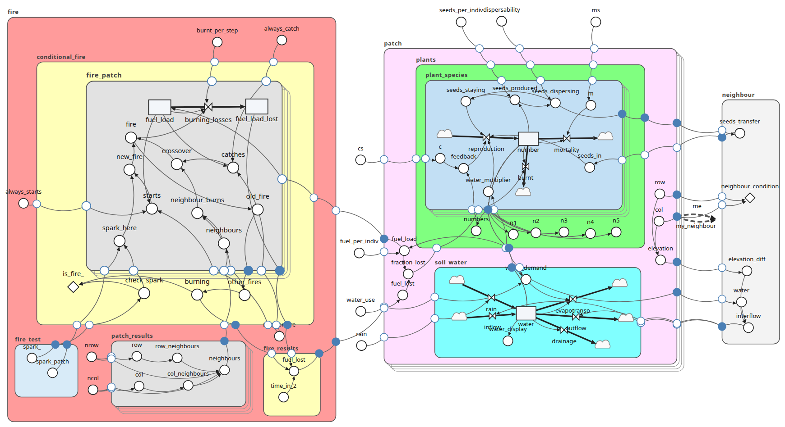

LAMOS
A landscape of vegetation, soil water and fire: a 15 by 15 grid of patches, each holding populations of five plant species. Plants reproduce and die, and their seeds spread to neighbouring patches. Rain fills each patch’s soil water, which plants use and which drains, evaporates and flows downhill to its neighbours. At month 10 a fire is lit in a patch chosen at random, and spreads from patch to patch, burning the fuel the plants provide.
A model of medium size (83 elements, 11 submodels, five levels deep) that shows what Simile’s submodels are for: a submodel for one patch, repeated across the grid, with neighbour relationships between patches. Rainfall is in mm per month, so a time unit is a month: run it for 120 to see ten years.
Open in SimileThe model spec: lamos.json. From Simile’s model catalogue, lamos1a (2003).
